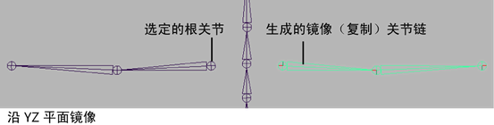

注：
无法同时使用编辑 > 复制(Edit > Duplicate)和 -1“比例”(Scale)来创建重复的镜像关节链。改为使用骨架 > 镜像关节(Skeleton > Mirror Joint)。
镜像关节链
- 选择要复制的关节链的父对象关节。
- 在“装备”(Rigging)菜单集（按 F3 键）中，选择“骨架 > 镜像关节”(Skeleton > Mirror Joints) >
 。
。
- 在“镜像平面”(Mirror Across)选项中，选择希望镜像关节链的平面。
这些选项代表其原点位于关节链父对象关节上的平面。
- 设定“镜像功能”(Mirror Function)。
- 如果要重命名镜像（重复）关节，请在“搜索”(Search For)框中输入它们的旧名称，然后在“替换为”(Replace With)框中输入新名称。
- 执行下列操作之一：
- 单击“镜像”(Mirror)，在特定平面中复制和翻转当前关节链。
将关闭“镜像关节选项”(Mirror Joint Options)窗口。
- 单击“应用”(Apply)，在特定平面中复制和翻转当前关节链。
“镜像关节选项”(Mirror Joint Options)窗口仍打开。
- 单击“关闭”(Close)放弃选项窗口的设置。
将关闭“镜像关节选项”(Mirror Joint Options)窗口。
在其原点位于关节链父对象关节上的选定平面中镜像关节链。
